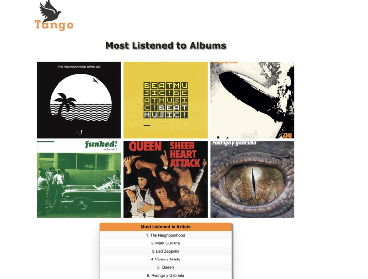
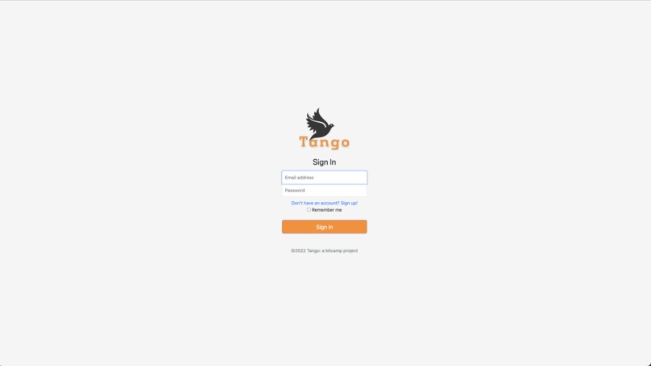

During my internship, I developed a release notes web page and a streamlined release process using React, Redux, and TypeScript to keep users informed about updates. I improved the frontend experience by creating an intuitive grid layout and increased test coverage by 50% using Jest and SonarQube.
I led discussions for over 30 students in Object-Oriented Programming with Java ( CMSC132, CMSC131) and Discrete Structures (CMSC250). My role included assisting students with course material, hosting office hours for around 600 students, supplementing instructional content, and grading assignments.
I created Leafy, a tree visualizer using
React and
React-D3-Tree for dynamic tree
structures, and React Zoom Pan Pinch for interactive
zooming and panning. This project leverages TypeScript and
Vite. The goal of this project was to use these visualizations as
teaching aids.
Visualizing BFS with Queue (left) and without Queue (right)
Research Intern at Institute for Systems Research
(ISR), University of Maryland working with Professor Jeffrey Herrmann
and GRA Prannoy
Namala.
The main task of the internship was to propose data-driven metareasoning algorithms and
compare the performance of the existing algorithms for the Perimeter Defense
Problem.
Metareasoning is defined as the process of reasoning about reasoning.
It is used to monitor and control the decision-making process and improve the efficiency
and performance of algorithms.
Part of the "First-Year Innovation and Research Experience" Autonomous
Unmanned Systems Cluster. FIRE provides first-year UMD students an inclusive
faculty-mentored research experience
that drives accelerated professional development and equality of opportunity.
The Autonomous Systems Cluster focusses on providing concepts related
to Computer Vision, programming skills using Python,
working
with Linux environment, Virtual Machines and
developing algorithms on a drone.
Key project elements often include the development of novel mission concepts,
motion planning algorithms and physical vehicle prototypes.
Detecting the barrel using OpenCV library in Python
Under the guidance of Professor Shabnam Jabeen, worked with team
members to research
and understand the topics of Quantum Machine Learning. Quantum
computing
relies on qubits which are imprecise and lead to deviations from
expected output.
The main learning points of the stream were to understand
the theory behind Quantum Computing bits ("qubit")
and Quantum Circuit Design, and learn to use IBM Qiskit™
to deploy and run ML algorithms on complex multi-qubit hardware
over IBM servers.
Poster presented at the FIRE Summit, 2022.
The creation of Speechify was driven by the objective of enhancing accessibility
and aiding individuals with dyslexia in their reading endeavors.
Our approach involved integrating OCR, Flutter,
Python, Flask, and TTS to fashion a
tool
that's both easy to use and effective.
Notably, our efforts were recognized with the People's Choice Hack
award,
chosen from a pool of 125 projects.
Extracting text from an image and reading it for the user.
Worked with a team of 4 members to create "Tango", a website focussed on connecting people with similar music interests. To gather information about music interests, Spotify's API was used. After collecting the information, the algorithm finds people that are also within a specific range in terms of distance. The query is passed through SQL and the result is shown visually on maps using Google's API . The database was maintained using CockroachDB and integrated with Python. The website was created by using HTML, CSS and Flask. The code was shared and maintained using Github.
 Loading and Sign In page for the project.
CMSC131: The goal of the course is to develop skills
such as program design and testing
as well as the implementation of programs using a graphical IDE.
MATH140: Introduction to calculus, including functions, limits, continuity,
derivatives and applications of the derivative, sketching of graphs of functions,
introduction to definite and indefinite integrals, and calculation of area.
FIRE120/FIRE198: Engages the research process through the design, research,
collaborative authorship
and iterative review-based refinement of research proposals.
CMSC216: The goal of the course is to convey the fundamental concepts that
enable programs to execute on real hardware. Those concepts include how the
operating system virtualizes the hardware to provide basic services and abstractions
to enable a user program to effectively use the available hardware resources.
The course also addresses how different programming constructs and idioms work.
CMSC250: This course covers fundamental mathematical concepts related to
computer science, including propositional logic, first-order logic, methods of
proof, elementary number theory (including sequences, and induction), set theory
with finite and infinite sets, functions, relations, introductory counting and
probability theory,
and an introduction to graph theory.
MATH240: Basic concepts of linear algebra: vector spaces, applications to
line and plane geometry, linear equations and matrices, similar matrices, linear
transformations, eigenvalues,
determinants and quadratic forms.